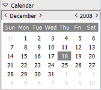

{application}


|
Calendar view panel |
 |
Note that the icons may vary according to the used theme/skin. |
Description:
This window will show all the scheduled events for a selected day and the containing week.
|  | In order to acces the calendar view you must double click on the desired day in the calendar control located in the main form (the one that appears after you log in). If the calendar is minimized you must expand it by clicking on the "Calendar" expander. When you click on a day, the whole week will be displayed, but only the selected day will be detailed. You can change the month or the year by clicking on the "<" and ">" arrows. |
|
Refresh button When presing this button, all the data in the calendar view will be reloaded. Selected day event viewer Here you will see all the scheduled events (if any) for the selected day. You can double click on an event in order to view it or modify it. You can also drag and drop it to "Personal documents" or "Clipboard". Day expander You can expand or minimze a day by using this button. When a day is minimized you will not see the events contained in that day. Rest of the week event viewer This viewer is similar to the "Selected day event viewer" except that it shows the contents of the other days in the week that contains the selected day. You can also double click on an event to view/edit or drag and drop it to "Personal documents" or "Clipboard". Calendar view close button After you're done with the calendar, you can close it by clicking this button. |